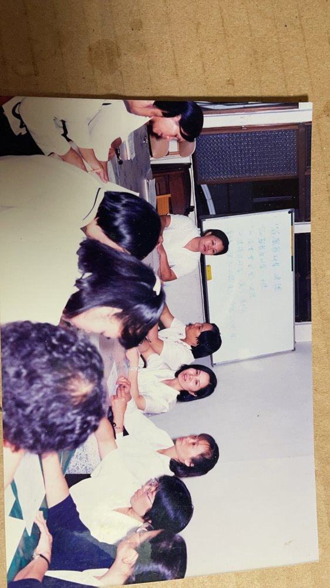
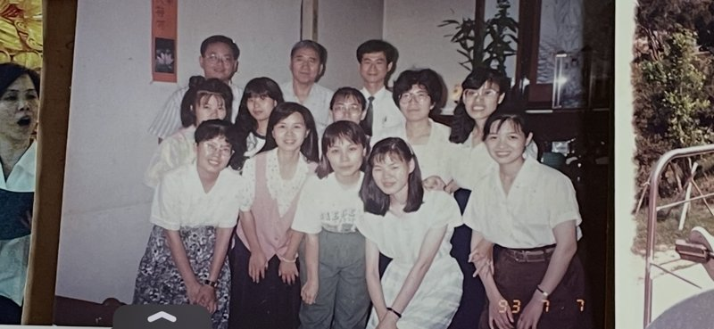
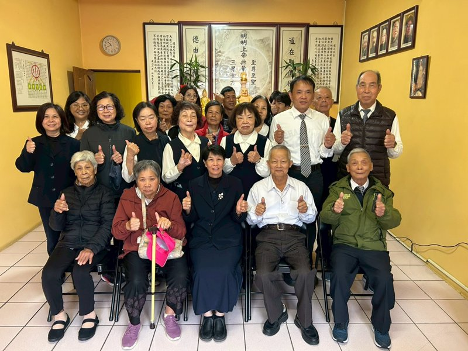
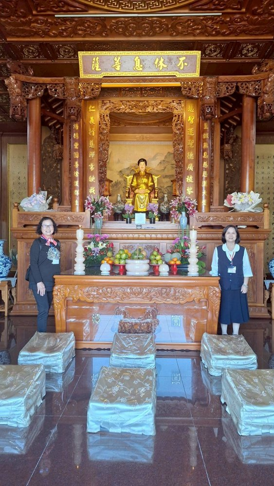
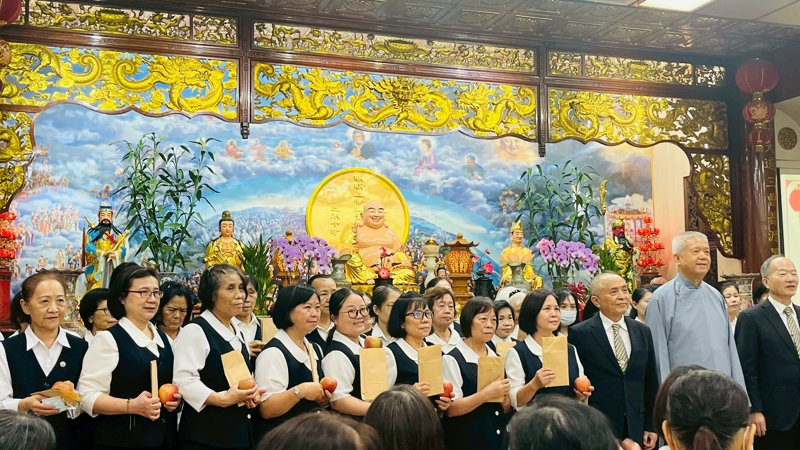

後學天上的愿立便從今生年輕時因諸事不順而開啟修辦之路程，而搭起後學修辦之大門即是後學的妹妹蔡雪琴經理之姐妹情，回想後學在道場32年的修辦過程中，由衷感謝恩師濟公活佛先說後應，後學在26歲那年在雲林彌勒佛院開三天的法會，法會第二天恩師送給該班300多人的今生使命即是全心投入，接著後學也要感謝南海古佛慈悲，在後學33歲那年當走在人生十字路口，徬惶決擇時，是古佛提點後學今生的使命即是要成全過去世同爲同修的人能在今生踏上修辦路，將來才能回返理天朝母顏，後學再回想後學從出生到45歲的歲月裡，無數次的病弱及意外，後學本該已離世，不過卻在一次因緣當中後學承蒙開台尊王鄭成功大仙的提點，告訴後學本該在45歲那年離世，只因後學在道場公壇三施累積了一些的功德，是仙佛慈悲延壽了後學修辦的年齡至今年已邁入60歲了，真的感謝天恩與師德，後學在回憶在母壇正德佛堂這棵大樹庇佑26的修辦中，因李素鳳點傳師慈悲鼓勵，讓後學從一個無知不懂的後學輩，提升爲一名講師，及在李經理慈悲提攜與鼓勵下，後學無數次前往菲律賓，大陸等地與當地道親鼓勵與結緣，真的印證了早年南海古佛慈悲與後學點醒後學今生的使命即是要找回過去世的同修能踏上聖賢路，而人生的境遇是我們無法預知的，後學回想在107年因母壇眾正德後學漸多了，而道場公壇要傳承定要栽培人才，所以從母壇正德分支出去的子壇毓德佛堂在106/12/30成立了，而後學因緣際會也轉到毓德佛堂學習道務推動的機緣，仙佛云：世間的動盪及變化也是人類道德倫喪的主使者，所以在108～109年間全世間發生疫情嚴重的病毒，而全世界死與疫情的人數有好幾百萬人，而人類的浩劫，上天慈悲不忍，所以老母頒下號召令，要讓世間萬家生佛，進而喚醒人人良知良能之至善，因此蔡雪琴點傳師用報恩及慈悲心發愿要在台灣設一間公壇，所以聖德佛堂在109年因此而成立了，而後學因身爲親人因此又再轉到聖德佛堂學習與帶動一切的道務，時間過的真快聖德已邁入第六年了，而後學也感受到後學從過去在正德的個性膽怯，及隨心修辦的思惟及舒適的環境到如今在聖德佛堂必須十項要能，智慧勇氣更是要雙全，而德功定要兼備，才能感召及帶領有緣後學踏上光明燦爛的聖賢路，後學心中也常謹記仙佛慈示今世修定能今世成，而後學今生身爲一名清修人員，感恩不休息菩薩慈悲鼓勵，我們能在發一崇德學修講辦行是七世種福田，而後學常常自勉自己今世修辦決不能留白，後學更自許自己要創造自己及後學輩今生不朽的聖業，也祝福母壇正德能在創100年的感恩壇慶！